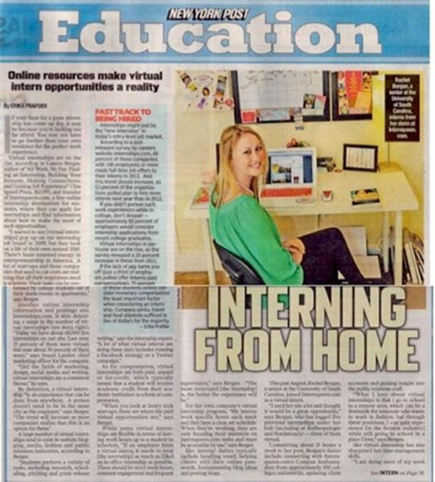

Upcoming Networking Events:
-
Intern Queen Party - Sometime this summer there will be another Intern Queen. Party. It is a awesome networking oppoutunity with representatives from companies like Viacom and Sirius XM. iIt is any Communication major's dream. Last years party was a great sucess with multiple students getting internship oppourtunities. So attend !

-
PRSSA National Conference - Philadelphia - The city is located centrally in the Northeast within near distance of New York City, Washington D.C., Wilmington, DE, rural farms, mountains, beaches and more. Attendees can get to Philadelphia easily by trains, planes, highways and rivers. For these reasons, Philadelphia is the perfect place to host our 2013 Conference with the theme, “Foundation for Innovation.” As the 2013 National Conference host, Drexel University is excited to share how our city, our school and our industry have taught us the value of innovation and the strong foundation necessary for successful growth and development.

Why Should Students Intern
Apply knowledge learned in the classroom. Again, there’s a big difference between learning about strategies and tactics and actually applying them. Interning for an organization helps students learn how their classroom knowledge applies to real situations and reinforces concepts taught in classes.
Gain valuable work experience. In most fields, no longer can a college graduate land an entry-level job with merely a bachelor’s degree and no prior work experience. Internships help students get this real-world experience while still in school. Internship programs are a great way to generate more work samples for your professional portfolio and give you real accomplishment stories for your resume and online profiles.
Decide if this is the right path for you. Working for a company in your industry can give you valuable insight into whether or not the industry is the right choice for you, potentially avoiding the costs of obtaining a degree in a field you’re not interested in. It’s best to know as early as possible, and an internship can help you do that.
Develop and build upon skills. Learning new skills in an internship can help you in future employment opportunities and might give you a leg up on your competition in future application processes.
Get a foot in the door at a company. Internship experiences provide a valuable opportunity to share your skills with a prospective employer long before the hiring process for an entry-level job occurs. This can be a great benefit when, in the future, an opening does occur—if you’ve impressed them, you’ll probably be on the list of top candidates for the job. Also, according to a survey by the National Association of Colleges and Employers (NACE), new graduates who took part in an internship program are more likely to have received a job offer than those who didn’t have an internship experience.
Gain valuable networking contacts. Another benefit to completing an internship is the contacts you make. Networking is often one of the best ways to land a new job and a primary way to learn about unadvertised job opportunities.
Obtain references for future job opportunities. Your internship supervisor has had a chance to see your skills in action at the company and is an ideal reference for future job opportunities. Other individuals you work closely with at your internship can also serve as references or provide recommendation letters for your job search.
Get Linkedin, Get a Job

For many college students and young professionals the world of LinkedIn is a mystery. The most common description is, “Oh, it’s like Facebook for the business world”. Although that may be true LinkedIn has so much more to offer in the realm of networking and job searches than Facebook ever did.
So you’ve chosen a professional picture and uploaded your resume. Now what? Many LinkedIn users do not get past this phase, leaving them with essentially an online version of the resume they already pass out to potential employers. There’s no need for professionals to see what you have already shown them reflected back on a computer screen, so it is time to explore the hidden tools of LinkedIn.
LinkedIn now offers a skills section, where users cannot only choose from a never ending list of positive qualities employers look for in potential candidates, but also various relevant computer programs and language skills. Users can even see what skills are trending in the market place, and therefore can perfect those qualities to make themselves more marketable. What’s more, you can also receive endorsements from friends, colleges and former employers on these skills, giving a profile more validity.
Don’t stop at adding skills to your page. LinkedIn also offers the new feature of linking projects or publications to your page. Do you have a killer portfolio website or have you worked for an impressive online magazine? Add it to your profile to let employers see a sample of your work. Even personal blogs can demonstrate your writing skills and sense of expertise in a subject manner and can easily be added. It is even possible to blog through LinkedIn making it effortless to share with your followers and network.
Now that you have demonstrated your skills and attributes to the LinkedIn community it is time to build a network. It is a no brainer to instantly add people you meet through business fairs, classes and internship or job interviews but it is possible to connect with so many more. Adding a LinkedIn address to a resume or profile is a hot trend in the job market, because employers instantly have access to a resume, which is constantly updated, an endorsed skill set and another means to communicate with you. You can also search for new connections by university or reach out to an employer or intern coordinator through the messenger feature.
Another way to expand your network is to join groups involving many of your organizations. Often you membership in the organization must be verified to enter the group, however, once in you have access to hundreds of other users, many with extensive networks and experience who share a common thread with you and are more than willing to help out.
So take an afternoon and update your profile. Explore these little known tools and use them to your advantage on your next internship or job hunt!
How to Survive Downtime at your Internship
So you’ve landed what you think is the perfect internship. You love the location, the company, and your fellow interns, but there’s one problem: you aren’t getting enough assignments. Speaking up to your boss and other senior-level coworkers can be intimidating, so follow these tips on how to gain more experience and get the most out of your internship!
1. Ask your direct supervisor for more work first. If you find yourself with a lot of spare time at work, this should be the first person you should contact, even if they seem unapproachable. Ask him or her if there is anything else you can help with or feedback that he or she can give you on some of your previous assignments. Be sure to mention areas of the company that you find interesting. Sometimes, it can be frustrating when your supervisor seems perpetually busy. If this is the case for you, ask them for some suggestions on whom to speak to next!
2. If asking your supervisor wasn’t successful, approach one of your coworkers that he or she suggested or with whom you have done assignments for in the past, and see if they have anything with which you can help. If they don’t at the moment, they will look out for you later if they know that you are eager to work on something. Be friendly, but not pushy. Sometimes people are swamped and will be eager to hand off some tasks to the proactive intern.
3. Read industry magazines or the newspaper. Stay informed. While I had some downtime at my last internship or was in between assignments, I read the online editions of The New York Times and Advertising Age. Read the front page, and then look for relevant articles in other sections. You never know when a current events topic will come up in a meeting!
4. If possible, collaborate with other interns on an assignment. As a copywriting intern this past summer, I often helped the graphic design interns write copy for pages that they were designing, which helped me see different aspects of my company. Plus, you’ll probably make some great friends in the process!
5. If all else fails, return to your supervisor and ask that he or she continue to look for work for you to do! As your supervisor, they should be willing to help you out. Don’t be afraid to be persistent. When I interned last summer, I would visit my supervisor’s office every morning, even just to say hello. Keep your face in the front of his or her mind.
The most important thing to do is show initiative. I know it’s easy to hide at your desk and pretend to work, but you won’t learn anything if you browse Facebook all day-save that for home. Keep on looking, and I’m sure more tasks will fall in your lap soon!
Why Virtual Internships Just Make Sense For Gen Y

“Technologically savvy” is a phrase commonly used to describe Generation Y. Occasionally, people perceive this negatively, suggesting that our generation cannot communicate effectively face to face – that we are always plugged in and cannot separate ourselves from our technology. However, what some don’t realize is that these same qualities make us perfect candidates for a new trend: the virtual internship. A virtual internship is just as it sounds – completing an internship from a virtual (sometimes considered “remote”) location. You work in one location, your employer is located in another, and you communicate with one another through various means including email, Skype, and phone and conference calls. Virtual internships are popular in the public relations, social media, and online magazine industries.
Over the past three years, I have completed four virtual internships and two virtual Campus Ambassador positions and have firsthand knowledge of their incredible value. Below, I highlighted four of the many benefits based upon my experiences:
You develop exceptional time management skills: While some virtual internships have defined work hours (similar to an in-person internship), many are structured as “at-your-own-pace” assignments with specific deadlines. This approach enables the intern to complete assignments on their own time, by a specified due date. College students have a lot on their plate, so naturally this can be dangerous for those who don’t plan accordingly. Whether your virtual internship has set hours or a more flexible format, your time management skills will improve as you successfully juggle internship assignments with classes, schoolwork, exams, and social life.
They allow you to be flexible: Virtual internships are perfect for college students because you can plan assignments around your class schedule and extracurricular activities. They also enable students to maintain a great work-life balance. Because you don’t have to factor in commuting time, you can go to class until noon, intern from 12:30-3:30, make it to a 4:15 yoga class, and still have time to complete homework and study for exams. I keep my grades up, attend every football game, enjoy weekends with my friends and add great experience to my resume — things that are all important to me in order to maintain my work/life balance.
They enhance your communication skills: Many virtual internships require face-to-face communication with your supervisor on a daily basis. This could be considered a downside; however, it encourages interns to become proficient in written and oral (over the phone rather than in person) communication skills. Virtual interns communicate via email, Skype, and phone and conference calls. In addition, as companies increasingly rely on technology to manage costs and minimize travel expenses, becoming more proficient with evolving technology and communication tools will be a benefit. Improving virtual communication skills will serve you well as you prepare for the future.
You gain valuable career experience: I am a fashion major at the University of South Carolina; unfortunately, there are not many fashion internship opportunities in Columbia. I love my school and wouldn’t trade being here for anything in the world; however, it does have setbacks in that it is hard to find internships related to my post-graduation career aspirations. Virtual internships have enabled me to gain valuable experience in fashion journalism, public relations, and social media. I have written press releases, developed media kits, published fashion journalism articles, created a social media and public relations campaign, and learned to communicate professionally with a wide range of clientele. I have gained all of these experiences — each of which will help to further my career — working remotely from my apartment in Columbia.
The virtual internship is a developing trend in the internship world, allowing students to build their resume and develop skills that will be useful in their chosen field. Some may criticize our generation for being too absorbed in our technology; however, this love for — and proficiency with — technology, a tendency to always be “plugged in,” and strong online communication skills can help students succeed in a virtual internship and later on in their post-grad career.